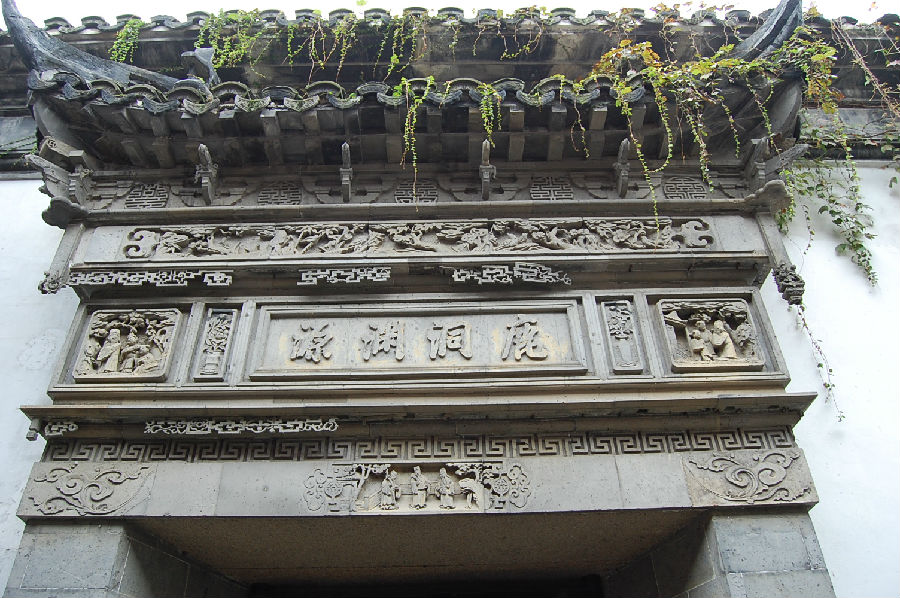

嘉兴市文物保护网 · 市级文物保护点 · 2020-11-02 · 原文

朱大栩老宅位于嘉兴市秀洲区新塍镇秀水社区西北大街168号。据屋主介绍为清同治年间建造，原住户经营丝绸生意，土改后房子被政府分给无房户居住。坐北朝南，占地面积589平方米，通面阔12米，通进深43米。原为四进，现一进已毁，仅存后三进。二进前天井处有砖雕门楼，砖雕工艺精美，雕福禄寿等纹饰。屋顶为硬山顶，有马头墙，抬梁式五架梁，有冬瓜梁，梁架用料粗大，梁上及门窗等处有细致雕工。老宅门楼保存完整，砖雕工艺精美，在嘉兴现存门楼中是难得的精品，具有较高的历史和艺术价值。2002年公布为嘉兴市文物保护点。